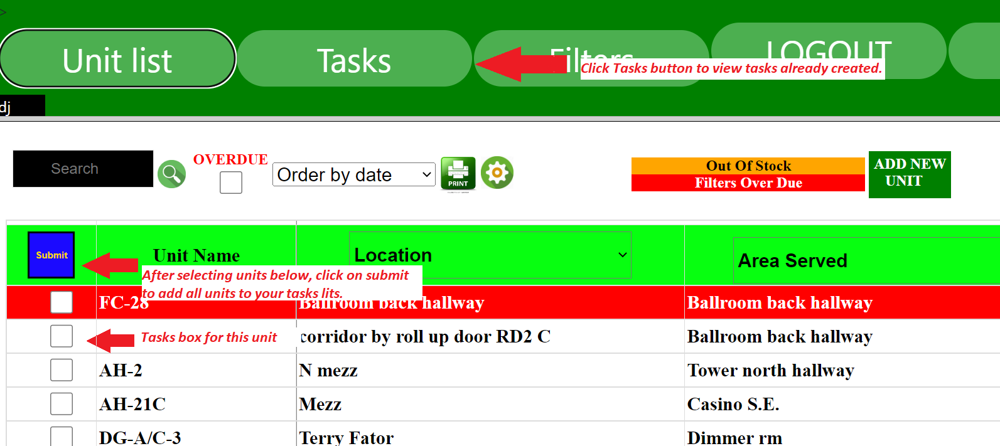
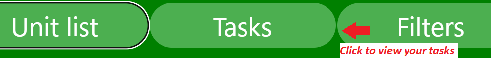

To add a unit to your tasks list check the box next to the unit name in the Unit List
 BACK TO TOP
Viewing your task list:
Click on the Tasks button in the navigation bar.

Tasks list will appear on page like below.

Completing or Canceling a task:
Cancel a task by clicking on the cancel task icon.
Complete a task by clicking on the complete task icon.
Completing a task will also update your filter inventory automatically.
Viewing your task history.
You can view your completed task history by clicking on the Task History button.
Cancel a task by clicking on the cancel task icon.
Complete a task by clicking on the complete task icon.
Completing a task will also update your filter inventory automatically.